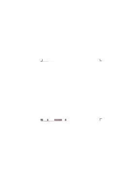
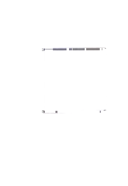
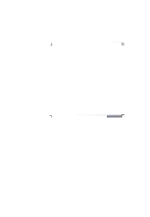

第二部分Part IIЧасть II
第14—16题： 匹配句子。Questions 14-16: Match the sentences.Вопросы 14-16: Сопоставьте предложения.
Zǎoshang qī diǎn bàn.A 早上 七点 半。
Duìbuqǐ, wǒ yǒu kè.B 对不起，我 有 课。
Diànyǐngyuàn.C 电影院。
Hǎo de, xièxie!D 好的，谢谢！
Nǐ hē shuǐ ma?例如：你喝水吗？
Would you like some water?Хотите немного воды?我们 在 哪儿 见？
现在 几 点？
我们 下午 去 超市 吧。
第三部分Part IIIЧасть III
第17—18题： 选词填空。Questions 17-18: Choose the correct word to fill in each blank.Вопросы 17-18: Выберите правильное слово, чтобы заполнить каждый пропуск.
yīyuànA 医院
zhōngwǔB 中午
míngziC 名字
Nǐ jiào shénme例如：你叫什么（ C ）？
What is your name?Как тебя зовут?17.
046Wǒmen xiàkè.我们（ ）12:00 下课。
We ( ) finish class at 12:00.Мы ( ) заканчиваем урок в 12:00.